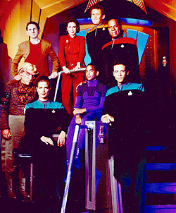
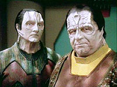
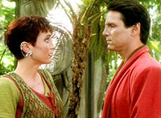
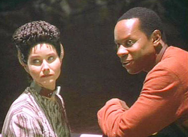
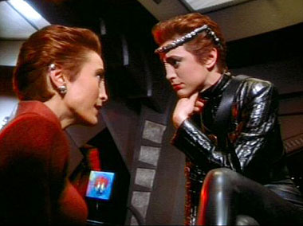
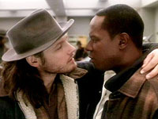

|
por Leandro M. Pinto
Algumas percepes muito
comuns ao fandom de Jornada
nas Estrelas, sobre as primeiras temporadas de Deep Space Nine, seguem as linhas de As primeiras so ruins / s melhorou depois
da quarta / s melhorou com o Dominion / com a Defiant / com o Worf / com a guerra. A tudo isto, digo: nada mais longe
da realidade.  Como
sempre tenho comentado quando a oportunidade surge, Deep Space Nine foi na realidade uma srie muito mais constante
do que se acredita. Suas primeiras temporadas, embora de fato no tenham sido
as melhores da srie, esto bem longe de serem to ruins como se acredita que
foram, e as ltimas temporadas, muito boas que tenham sido, tambm no foram as
obras-primas da civilizao ocidental a qual so creditadas como. A srie na realidade
teve uma constncia bem regular, e seu crescimento na qualidade foi gradativo
e suave, e no em saltos e surtos.
O
que eu acredito que ocorra algo que de certa forma tambm pode ser observado
para Voyager e Enterprise. Embora as justificveis
crticas aos inmeros problemas de ambas estas duas sries sejam compreensveis,
isto muitas vezes acaba gerando uma quantidade e intensidade nas crticas que
se torna completamente desproporcional, algo inadequado para realmente definir
os pontos fortes e fracos de ambas. O
mesmo ocorre para as trs primeiras temporadas de Deep Space Nine:
embora at poderiam ser consideradas como as mais fracas da srie, isto no
as torna necessariamente ruins mas muito pelo contrrio. Tais temporadas demonstram
as boas qualidades da srie como um todo desde o incio, mas mesmo assim acabam
sofrendo uma quantidade de crticas as quais no se sustentam muito contra uma
anlise criteriosa de seus episdios e temas, que o objetivo deste artigo. Avaliando-as
como um todo em relao a constncia e regularidade,
as duas primeiras temporadas so semelhantes. Comeam bem e do uma
certa cada, e ficam oscilando um pouco antes de uma estabilizada por meados
de temporada, com seqncia de alguns constantes bons episdios, e nova queda
e recuperao antes do fechamento da temporada. Na primeira, a estabilidade de
meados de temporada ocorre por entre "The
Nagus" e "Progress",
enquanto na segunda isto ocorre mais frente, entre "Blood
Oath" e "Tribunal".
J a terceira temporada  tem
um perfil um pouco diferente. Comea bem e mantm uma constncia de bons episdios
por mais tempo, antes de comear a oscilar bastante aps "Civil
Defense", para novamente conseguir outro
bom grupo de episdios em volta do duplo "Improbable Cause" e "The Die is Cast",
e da mesma maneira que a segunda, termina em um crescendo de qualidade at o season finale "The JemHadar" para a segunda,
"The Adversary"
para a terceira. Todas estas trs temporadas tm, claro, seus
episdios classe unha-na-lousa, como por exemplo,
"Move
Along Home", na primeira, "Melora",
na segunda e "Fascination",
na terceira. Mas mesmo estes e alguns outros esto longe de comprometer o todo
de cada uma das trs temporadas. A
primeira temporada, como qualquer temporada inicial, precisa realizar o trabalho
de estabelecer todo o ambiente geral dos personagens e seu contexto alm de tambm
ter que apresentar as histrias individuais de cada episdio. E este trabalho
a primeira temporada de Deep Space Nine
realiza muito bem. Episdios mais dedicados aos arcos principais da srie como
"Babel",
"Battle Lines" e "Progress"
do fora a isto, mas mesmo nos meandros de isoaldos
episdios mediano-para-ruim como "The Forsaken" podemos
encontrar elementos valiosos sobre os bajorianos
estarem lidando com o ps-guerra, fim da ocupao e reconstruo de sua sociedade.
E com a ajuda deste desenvolvimento que "Duet",
por exemplo, consegue ser o grande episdio que , envolvente e cativante. Sem
este contexto, de sabermos as relaes bajorianas e
cardassianas, e conhecermos os personagens envolvidos,
particularmente Kira, "Duet"
poderia soar vazio e at mesmo falso. Teria, por exemplo, o mesmo problema que
"The Naked Time"
na Srie Original e "The
Naked Now" em A Nova Gerao,
que deixar um aspecto de T, e da?, devido a no
sabermos muito sobre os personagens e seu ambiente antes da situao apresentada.  J
a segunda temporada consegue fazer bom uso dos elementos estabelecidos na temporada
anterior, tanto em relao a interao dos personagens
como os arcos de histria. Com os personagens, a interao entre estes j se dirigia
a caminhos que iriam, mais tarde, ficar bastante familiares
ao pblico, como por exemplo a camaradagem entre Bashir
e OBrien. No que diz respeito a tramas, temos um bom
incio com o mini-arco de insurgncia poltica bajoriana,
com a trilogia do Crculo. Aps isto, h a oscilao de meados da temporada, onde
podemos encontrar tanto bons segmentos ainda relacionados aos bajorianos (e Kira entre eles) como
"Cardassians"
e "Necessary Evil",
como tambm uma seqncia rpida de fracos episdios de todos os tipos, de "Second
Sight" at "Rivais".
Mas aps "Blood Oath", a segunda temporada se mostra extremamente
slida, e mesmo com a leve queda antes de "The
JemHadar", a mdia de qualidade louvvel.
Nesta
temporada que temos a introduo do Dominion, em um ritmo sutil que, enquanto
consegue manter a coisa instigante, tambm no toma todo o oxignio da sala, e
foi bem levado apesar de eu pessoalmente ter alguns problemas com os detalhes
da coisa, como subjetivamente sugerir que os servios de inteligncia federados
estariam mais por fora da situao no quadrante Gamma do que civis ferengis, os
quais Deep Space Nine sempre teve o
costume de relegar demais ao papel de comic-relief. Alm disto, a segunda temporada
tambm viu o arco Maqui engatar em bom ritmo, e na viso deste missivista, este
foi o ponto alto da temporada. Como j comentado
em artigo anterior aqui no Trek Brasilis,
sempre considerei o arco Maqui como o melhor arco de histria que j houve em
Jornada nas Estrelas, mas que infelizmente
no viu todo o seu excelente potencial ser adequadamente desenvolvido. A
terceira temporada inegavelmente teve reflexos da carga de Deep
Space Nine ter que assumir a posio de srie-snior
da franquia, com o fim de A Nova Gerao,
e com isto, as responsabilidades enquanto produto de entretenimento em responder
com a audincia que se espera de uma srie em crescimento. Tais
fatores, sem dvida, influenciaram os caminhos pelos quais a
srie seguiu da terceira temporada em diante. Este cenrio de melhoras necessrias para
cativar a audincia ilustra bem a nossa questo aqui em discusso, sobre a percepo
equivocada de que a srie teria melhorado em saltos notveis, o que no foi realmente
o caso. Contudo, negligenciar os elementos da terceira temporada que foram introduzidos
em resposta a isto seria um equvoco, claro. Tais elementos de fato ajudaram a
srie a amadurecer e diversificar a interao dos personagens e o desenvolvimento
das tramas, mas jamais foi algo solenemente responsvel por quaisquer melhorias
que ocorreram, e tambm jamais deixaram a srie completamente refm das pragmticas
questes de audincia. Isto, aliado boa adio a equipe de Ronald
Moore e Ren Echevarria, alumnis
de A Nova Gerao, certamente deve justificar
em parte a razo do perfil da terceira temporada ser diferente das duas primeiras,
com maiores oscilaes entre fortes e fracos episdios, em a coisa estar se reassentando
em um novo tom, mas houve uma boa constncia no incio e final da temporada; a
srie demonstrava maturidade crescente.  O
mais visvel elemento adicionado foi, claro, a Defiant
e a apresentao definitiva do Dominion. Apesar de que eu considerar a Defiant uma boa adio srie, eu sempre
considerei que a maneira pela qual isto ocorreu deixou a desejar. O arco em que
isto ocorreu, com o season-finale "The
JemHadar" e o duplo "The Search",
teve um tom exagerado de urgncia apenas para no final haver uma anulao da situao
que estabelece, pela maneira que a segunda parte do duplo terminou. E a maneira
na trama pela qual a Defiant foi alocada para DS9 tambm deixou a desejar. Ao invs de
o almirantado federado despachar para a ainda mais importante DS9 uma necessria
Fora-Tarefa de vrias naves, nucleada em uma nave pesada, o que eles fazem
enviar para l um prottipo de pr-srie com uma tripulao s de praas, a qual
o corpo de oficiais de DS9 quem teriam que comandar. E ao invs de Sisko demonstrar
indignao a esta poltica, ele quem demonstra ter sido um dos patrocinadores
da idia um momento de conflito desnecessariamente desperdiado. Sim,
estou ciente das necessidades e limitaes da srie enquanto produo televisiva:
no seria fcil a insero de inmeras naves capitais no todo da srie, bem como
os personagens de um corpo de oficiais prprio para a Defiant. Contudo, como disse acima, interao entre a equipe em comando
da DS9 e o almirantado federado poderia gerar boas tramas com Sisko aceitar com
reservas os seus reforos, mas o que houve foi o contrrio disto. A idia original
por Michael Piller e Ira
Behr para uma nova nave para a srie foi boa, mas o desenvolvimento por Ronald
Moore da introduo dela nunca realmente foi adequado.  Mas
seja como for, a Defiant e a maior presena do Dominion
foram oportunidades para explorar novas situaes, especialmente para Odo, que
agora tem que lidar com a parte negativa do velho clich de Cuidado com o que
deseja: pode conseguir. Odo agora no lida mais com o fato de no conhecer suas
origens, mas sim com as conseqncias desta descoberta, e isto realmente deu uma
nova dinmica ao personagem, coisa muito bem vinda. O resultado lquido deste
potencial comeou a surgir em episdios de meados da temporada, para finalmente
ter um pico com a excelente dupla "Improbable Cause" e "The
Die is Cast". A terceira temporada tambm foi campo para, por exemplo,
a expanso dos elementos do universo-espelho, iniciado no timo "Crossover"
da segunda temporada, e tambm a expanso do manifesto de personagens secundrios,
e entre eles, Michael Eddington um destaque que quero fazer, pela qualidade
do personagem e da adequada atuao rudo-branco de Kenneth
Marshall para este momento do personagem, e a importncia  deste
para o arco Maqui. Mas mesmo episdios de certa forma isolados do todo, como "Explorers"
e o duplo "Past
Tense" ajudam a reforar a terceira temporada. Considerando
todos estes fatores, qual seria ento a razo desta percepo geral de que estas
temporadas no teriam sido to boas como podemos constatar que de fato foram?
Eu acredito que parte desta razo est no fato de se esperar como elemento principal
delas algo que no caso de Deep Space Nine,
sempre esteve como elemento secundrio, que seria haver high-concepts, elementos
exagerados de fico-cientfica e ao e efeitos por si mesmos. Um bom bolo no
deve ser julgado pela sua cobertura, mas sim pelo seu recheio, e as trs primeiras
temporadas de Deep Space Nine nunca
prezaram por capricharem na cobertura, verdade: nelas, no encontramos doses
exageradas e foradas de coisas como
batalhas, ao, tirinhos e tecnobable vazio embora tais coisas tambm estejam
presentes. A
segunda temporada viu a introduo do Dominion? Sim. A terceira temporada viu
a introduo da Defiant? Sim. Mas o crescimento de qualidade
da segunda em relao a primeira, e da terceira em relao
a segunda, de modo algum devido a introduo destes elementos, mas sim devido
ao fortalecimento das caractersticas principais da srie. O que as trs primeiras
temporadas de Deep Space Nine claramente possuem o saboroso
recheio da srie como um todo, por todas as suas temporadas: o forte desenvolvimento
de personagens, a interao destes, os conflitos resultantes disto, as tramas
bem elaboradas em torno disto, e a amarrao como um todo destes elementos. Este
recheio, j bem embasado, apenas foi recebendo aprimoramentos, o que garantiu
o constante crescimento na qualidade destes pontos fortes de Deep
Space Nine, que ocorreu de maneira bem gradativa, e no com saltos ou em surtos,
como se costuma imaginar. Sempre
considerei que, caso os arcos de trama de Deep
Space Nine tivesse seguido por caminhos bem diferentes do que foram a partir
da quarta temporada, ainda assim a srie teria mantido o seu constante e gradativo
aumento de qualidade, e na realidade, eu sempre acreditei que de fato realmente
deveria ter seguido outros caminhos diferentes do que foi a guerra
primeiro com os Klingons (e sim, eufemismos e tecnicalidades parte, foi uma
guerra) e depois com o Dominion. A franquia de Jornada nas Estrelas como um todo nunca dependeu de guerras e batalhas
para ter a qualidade que tem, e Deep Space
Nine no diferente. No meu ver, poderia ter tido ainda mais qualidade se
tivesse evitado o preguioso caminho fcil de conflito-tipo-Segunda-Guerra para
poder apoiar elementos dramticos. Mas
enfim. No frigir dos ovos, uma coisa certa. No precisamos fazer fora em procurar
o que que, afinal de contas, as trs primeiras temporadas
de Deep Space Nine tem de to bom
assim. No, basta apenas assistirmos de maneira tranqila. A sim, ento, os seus
pontos fortes naturalmente se destacam, e podemos perceber as razes de estas
primeiras temporadas serem to fortes como o todo da excelente srie a que deram
incio. |